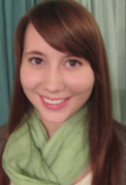

people

clair snodgrass
Clair Snodgrass, B.S. Student, Environmental Studies (College of Geosciences)
Clair is currently pursuing her undergraduate degree in Environmental Studies and is expected to graduate in May of 2015. While Clair is majoring in geosciences, her interest in social sciences led her to a research position at the Interface Ecology Lab. She primarily assists in designing research studies, developing methodologies, interviewing study participants, analyzing qualitative data, and writing and editing research papers. Working at the Ecology Lab constantly constantly provides her with the chance to learn new things.
From 2012-2013, Clair participated in the Bastrop Wildfire Grant under Dr. Kathryn Henderson. Through this unique opportunity she was able to develop and hone skills in interviewing, analyzing data, and applying grounded theory.
Clair's first project at the Ecology Lab was to assist with research on IdeaMACHE, an A&M developed cloud-based platform for collecting, organizing, and sharing text, pictures and links gathered from the Internet.
Clair was very involved in an ethnography of Pinterest users to discover more about how and why people curate digitally.
Currently Clair is working with a team of other researchers on the Trans-Surface Study, which seeks to develop theory regarding collaboration and design processes between partners.
publications and presentations
 Linder, R., Snodgrass, C., and Kerne, A.
Everyday Ideation: All of My Ideas Are On Pinterest,
Proc. CHI 2014, Toronto, Canada, April 2014. http://dx.doi.org/10.1145/2556288.2557273
Linder, R., Snodgrass, C., and Kerne, A.
Everyday Ideation: All of My Ideas Are On Pinterest,
Proc. CHI 2014, Toronto, Canada, April 2014. http://dx.doi.org/10.1145/2556288.2557273
connect
- email: clair
 ecologylab.net
ecologylab.net